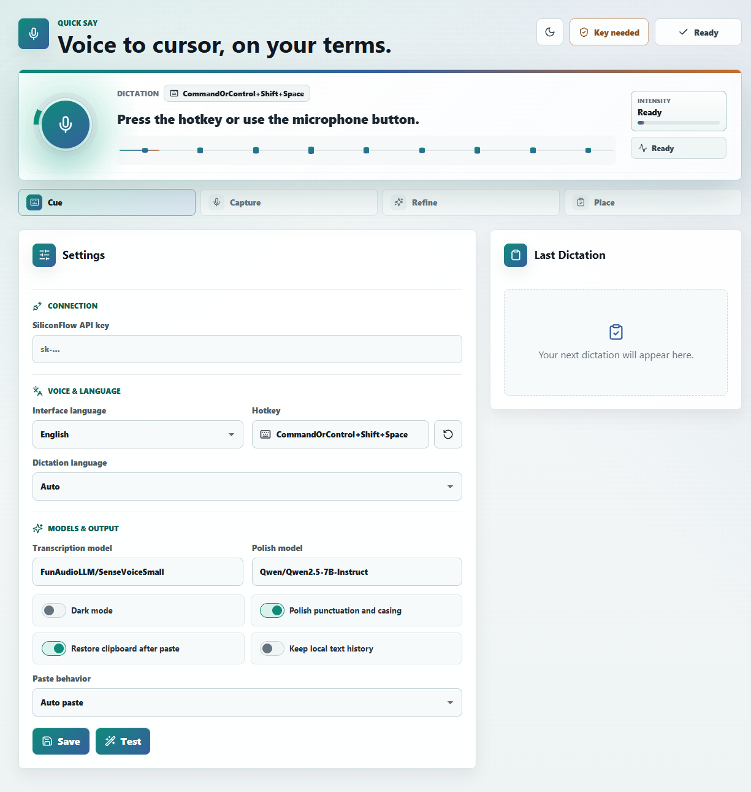

Fast capture
Start dictation from the keyboard or microphone button, then return to the app you were using.

Free desktop dictation for your own workflow
Quick Say turns a global hotkey into polished text at your cursor. It runs as a compact Tauri desktop app, stores settings locally, and uses your own SiliconFlow API key.
Hotkey CommandOrControl+Shift+Space.
Store settings locally and keys in the OS keyring.
Paste polished text without changing context.
Why it exists
Quick Say is built for people who want the speed of dictation without signing into another hosted writing product.
Start dictation from the keyboard or microphone button, then return to the app you were using.
Preferences stay on-device, API keys go to the OS keyring, and temporary WAV files are cleaned up.
Use transcription only, or let the polish step turn spoken thoughts into ready-to-paste text.
Workflow
Quick Say keeps the main path short: capture voice, transcribe it, polish when useful, and send the result to your clipboard or active cursor.
Listening for speech
Draft the release note for Quick Say and keep the tone calm.
Use CommandOrControl+Shift+Space, or start from the compact app window.
Audio is recorded temporarily, sent for transcription, then removed after processing.
Auto paste into the active app, or use clipboard-only mode when that is better.
Desktop app
The app is intentionally plain-spoken: set your provider key, choose the model defaults, pick paste behavior, and dictate when you need it.
Start capture from anywhere.
Models and paste behavior stay easy to inspect.
Bring your own key, no bundled account.
Privacy model
Quick Say does not run a hosted backend or include a shared API account. Transcription and polishing still use your configured SiliconFlow account.
API keys belong in the operating system keyring, not in logs or plaintext config.
Raw audio is only kept long enough to complete the dictation request, including error paths.
The project avoids analytics, tracking, bundled accounts, and hosted app services.
From source
Quick Say is early, but the core flow works from source for contributors and curious users.
pnpm install.pnpm tauri:dev.